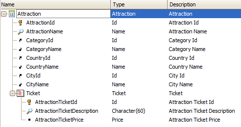

This method can be applied to a variable based on a Business Component type of a two-level transaction, in order to remove a record that corresponds to a "line" by specifying its key. First, all the structure must be loaded in memory by using the Load method, and after that, the RemoveByKey method can be used to remove the desired "line" by specifying the second level identifier. Suppose you define the following two-level transaction as a Business component (by setting its Business component property = True):  If you need to delete for the AttractionId = 6 the line whose AttractionTicketId=3, you can do so with the following code: &Attraction.Load(6) &Success = &Attraction.Ticket.RemoveByKey(3) //&Success: Boolean &Attraction.Save() If &Attraction.Success() Commit else Rollback endif AvailabilityThis method is available since GeneXus 15. Note: For iOS offline is available as from GeneXus 15 Upgrade 2. NoteThis method also applies to a collection of "headers". That is to say, it applies to a collection of business components in order to remove a header. |
| Backlinks |
| Toc:Business Component |